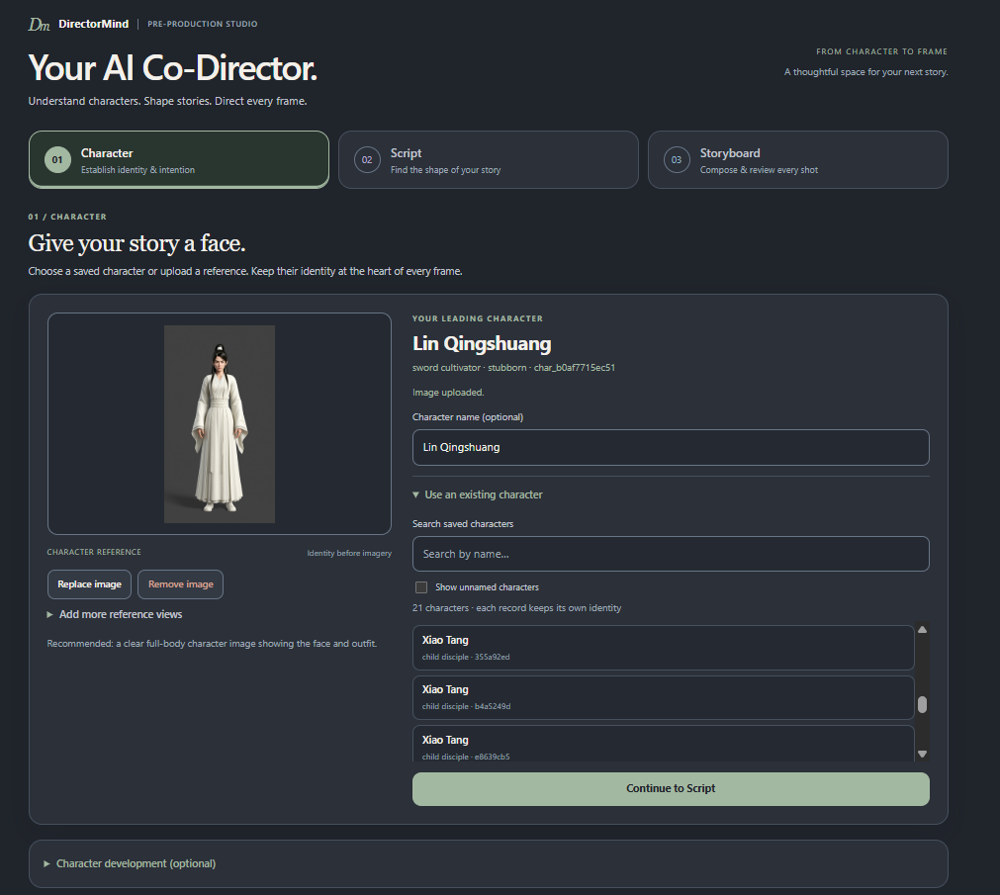
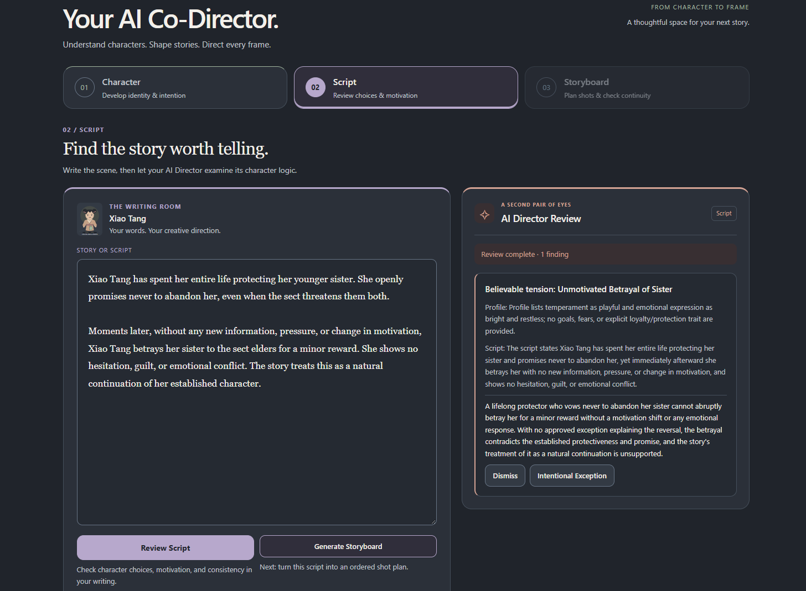
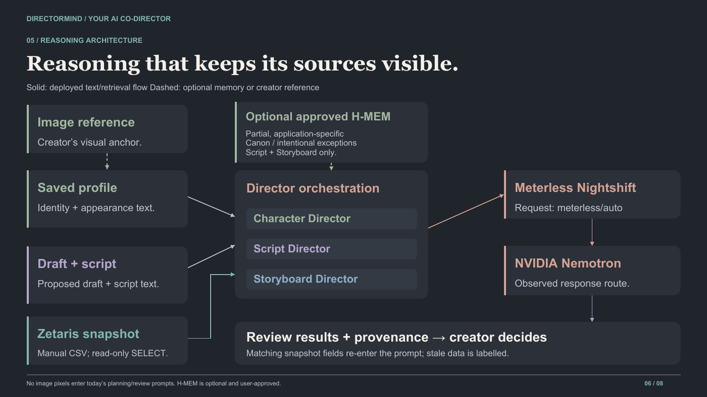

01 / CHARACTER
Understand the character
Start from saved character profiles and editable drafts. Analyze personality, review suggested changes, and explore story directions grounded in the character's traits.
OPEN AGENT HACKATHON 2026 · SOLO PROJECT
Your AI Co-Director, from character to frame.
An end-to-end agentic AI prototype for filmmaking pre-production. DirectorMind connects character analysis, story ideation, evidence-grounded script feedback, and storyboard continuity in a guided workflow.

01 · THE PROBLEM
Creative tools can generate isolated text or visuals, but long-form storytelling needs consistent identities, motivations, and decisions from scene to scene. DirectorMind gives creators structured checkpoints instead of treating every prompt as a fresh start.
02 · THREE CONNECTED DIRECTORS
Start from saved character profiles and editable drafts. Analyze personality, review suggested changes, and explore story directions grounded in the character's traits.
The Script Director checks whether character choices are supported by the saved profile and script context, then presents evidence-based findings for the creator to accept or dismiss.
Generate structured shot plans, retrieve storyboard records, and review consistency against saved character descriptions and script context.
03 · REAL APPLICATION SCREENS
These are screenshots of the working prototype, not concept mockups. The script review below highlights a specific character-motivation inconsistency with supporting context.

04 · HOW IT WORKS
A Python / JavaScript application orchestrates specialized reasoning stages, calls NVIDIA Nemotron via Meterless Nightshift, retrieves structured storyboard data from Zetaris, and can reuse creator-approved character memory.

Implementation scope: H-MEM-inspired memory is application-specific and user-approved, not a complete implementation of the H-MEM framework. Image references inform saved character descriptions; the system does not claim pixel-level visual comparisons.
05 · MY CONTRIBUTION
I developed the prototype independently, including its interface, backend workflows, API integrations, memory design, and regression/integration testing. Cursor and OpenAI Codex CLI supported implementation and debugging; I remained responsible for evaluating the results.
Connected the character → script → storyboard journey in a working application.
Designed reviews that identify specific inconsistencies and surface supporting context.
Added automated tests around core workflows and tool integrations.
TECHNOLOGIES & TOOLS